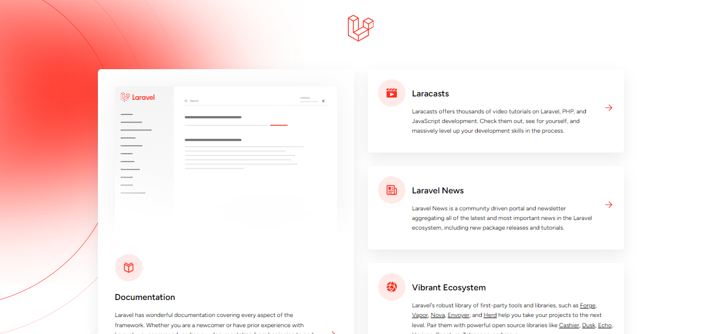
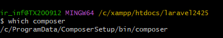

Instalazioa
Laravelek, Windows edo Mac-en instalatzeko hainbat modu eskaintzen ditu. Laravel instalatzeko modurik onena eta errazena Composer da. Composer php-rako mendekotasunen administratzailea da, eta bere web-zerbitzarian instala dezake.
Laravelekin lan egiteko aurrebaldintzak
- Ikasturte honetan Laravel 12-rekin lan egingo dugu, eta horrek PHP 8.2 - 8.4 edo goragokoa eskatzen du, PHPren PDO luzapena, datu-basearekin konektatzeko.
- MySQL (edo datu-baseen beste iturri batzuk, SQLite t ere erabil dezakezu
- Composer instalatuta izatea.
- Node.js (lagungarri baina ez beharrezkoa)
- Git (Laravel 11-tik aurrera beharrezkoa)
Zure ordenagailuan software horiek instalatuta dituzun egiaztatzeko, komando pare bat bota behar duzu kontsolaren bidez.
- PHP instalaturik dugun jakiteko. Komando hauetariko bat erabili dezakezu:
C:\xampp\php> .\php -v
- PHP instalaturik dugun jakiteko ere php gfitxategi baten hurrengo funtzioa idatzi dezakegu:
<?php phpinfo(); ?>
Instalazioa
- Webgune ofiziala: https://laravel.com/docs/12.x/installation
1.- Laraveleko instalatzailearen bidez
Laravelen instalatzailea Composer-ekin deskarga dezakezu, komando hau erabiliz:
composer global require laravel/installer
Ziurtatu ~/.composer/vendor/bin direktorioko ibilbidea zure PATHen artean dagoela, horrela zure sistemak behar bezala Laravelen instalatzailea aurkitu eta exekutatu ahal izango du. Direktorio hori aldatu egin daiteke sistema eragilearen edo erabiltzen ari zaren banaketaren arabera.
Gero, laravel new komandoa erabiliz, Laravelen azken bertsioaren kopia sor dezakezu. Adibidez, nombreProyectoizeneko proiektua sortuko dugu:
laravel new nombreProyecto-app
Proiektu berrirako nahi duzun izena aukera dezakezu.
Kasu honetan hainbat galdera egingo dizkigu, adibidez ia Breeze edo Jetstream nahi badugu. Momentuz ezetz esango genioke.
Frogak egiteko framework bat, ezetz momentuz ere
Git repository, horreri adibidez yes esango genioke.
Azkenean ere zein datu basearekin gure dugu sortu esango diogu.
2.- Composer bidez (direktorioa nombreProyecto)
Laravel Composer-ekin ere instala dezakezu, komando hau erabiliz:
composer create-project laravel/laravel izenaProiektua
--prefer-distint --prefer-install: Pakete bat deskargatu behar da batzuetan: source y dist.
Composerrek dist erabiltzen du lehenespenez. Pasatzen bada --prefer-install=source (edo --prefer-source), Composer iturritik instalatuko da, bat egotekotan.
Hori erabilgarria da proiektu bateko akats bat zuzendu eta mendekotasunaren tokiko git klon bat zuzenean lortu nahi baduzu. Composerrek paketeen garapen-bertsioetarako iturria automatikoki erabiltzen duen portaera heredatua lortzeko, erabili --prefer-install=auto. Ikus, halaber, config.preferred-install. Bandera hori pasatzeak konfigurazio-balioa baliogabetuko du.
composer create-project --prefer-dist laravel/laravel izenaProiektua
- -Laraveleko instalazioa Laravel Breezerekin
Laravel Breezek abiapuntu bikaina eta erraza eskaintzen dizu Laravelen aplikazioak autentikatzeko. Breeze erabiltzen hasteko, lehenbizi Laravelen proiektu berri bat sortu behar duzu:
Gero, zure proiektuaren erro-direktorioaren barruan, instalatu Breeze garapen-mendekotasun gisa:
composer require laravel/breeze --dev
Orain, erabili Artisanen breeze:install komandoa Breezek kautotze- eta ikuste-kontrolatzaile guztiak (Blade eta Tailwinden diseinatuak) kopiatu ditzan zure proiektuan:
php artisan breeze:install
php artisan migrate
Eta, azkenik, ondorengo komandoa exekutatzen du Breezeko interfazeko asset guztiak konpilatzeko:
npm install && npm run dev
Arazoak izanez gero, hurrengo estekan sartu: https://www.cursosgis.com/como-instalar-node-js-y-npm-en-4-pasos/
Gogoratu Breezeko kontrolatzaileak eta ikuspegiak pertsonaliza ditzakezula zure aplikazioaren beharretara egokitzeko.
4.-Git bidezko instalazioa
GitHub kodean edo Laravel beste proiektu batean hasiko gara. Hemen fase guztiak eskuz egin beharrekoak dira:
- Deskarga
git clone https://github.com/laravel/laravel.git nombreProyecto
cd nombreProyecto
- Mendekotasun instalazioak
composer install
- Sortu ingurune-fitxategia adibidetik abiatuta:
cp .env.example .env
- Zifratze-gakoa sortzea (.env ikusi).
php artisan key:generate
OHARRA
Laravel proiektua abian jartzea, zerbitzari integratuarekin
- artisan modu orokorrean erabiltzen da. Adibidez, klase guztiak komando horrekin sortu behar dira.
- Exekutatuz zerbitzaririk gabe gara dezakegu:
php artisan serve # para iniciar el servicio
ctrl+C # para cerrar
Gure zerbitzarirako iragarritako URL hori zure nabigatzaile gogokoenarekin irekiz, Laravelekin instalatu berri den aplikazio baten ongietorriko orria ikusi beharko zenuke.

KONTUZ HONEKIN!
Batzutan, segun eta zein terminal erabiltzen dugun, izan daiteke composer-en PATH-a ondo konfiguratuta ez egotea, hori gertatzekotan, terminalari adieraziko diogu PATH hori non dagoen.
Visual Studion gertatzekotan, Settings zabaldu eta settings.json fitxategian hurrengo hau idatziko dugu.
"terminal.integrated.env.windows": {
"PATH": "C:/ProgramData/ComposerSetup/bin/composer;${env:PATH}"
}
Non instalatuta dagoen jakiteko, beste terminal baten galdetuko dugu, adibidez git bash-en:
which composer

Visual Studio-ren terminala erabiltzean, php-ini fitxategian ;extension=zip aktibatu behar dugu ; kentzen.
extension=zip
Baliteke Laravelen salbuespen bat jasotzea sartzeko behar adina pribilegio ez duzunean, normalean storagedirektorioan Laravelen log-fitxategia sortu ezin denean. Hori konpontzeko, pribilegioak doitu ditzakezu; adibidez, Linux-en chmodkomandoa erabil dezakezu erabiltzaileen irakurketa- eta idazketa-pribilegioak emateko.
Zure proiektua duen direktoriotik, hauek egin ditzakezu:
sudo chmod -R o=rwx storage